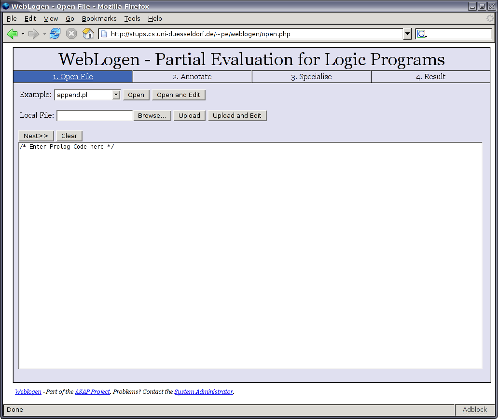
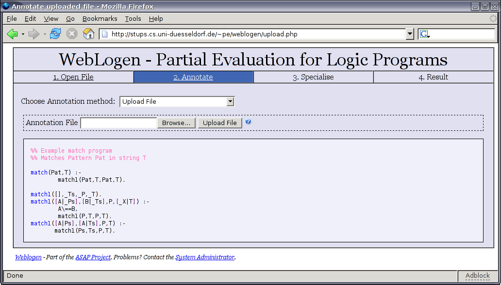
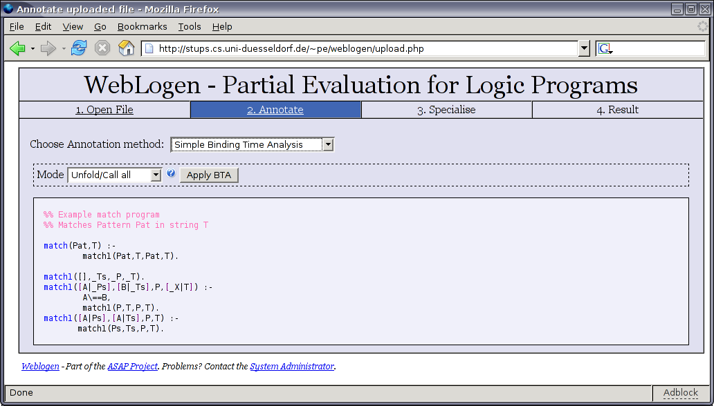
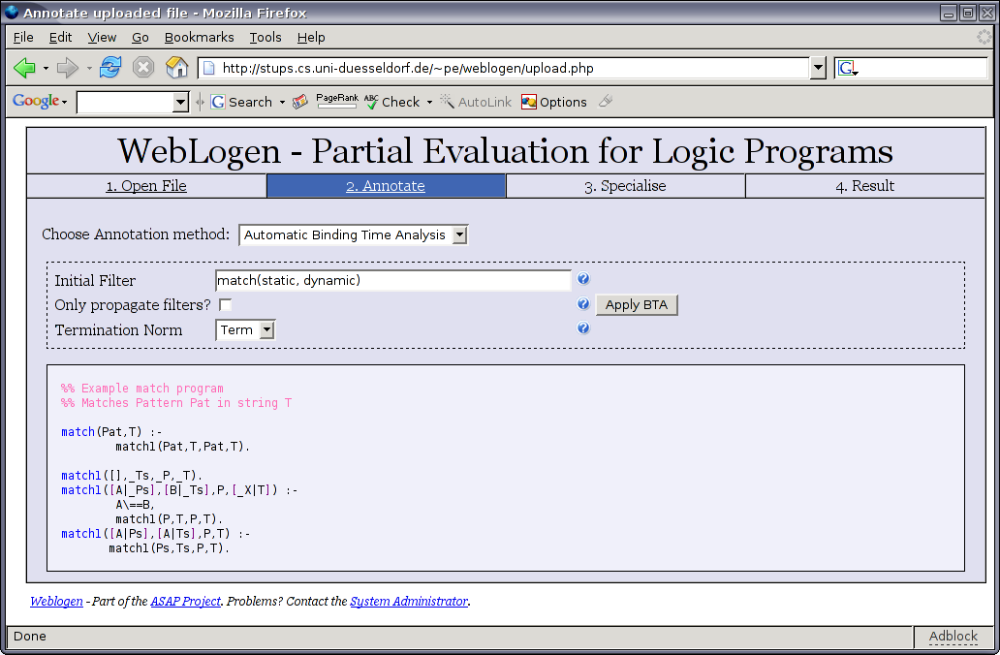
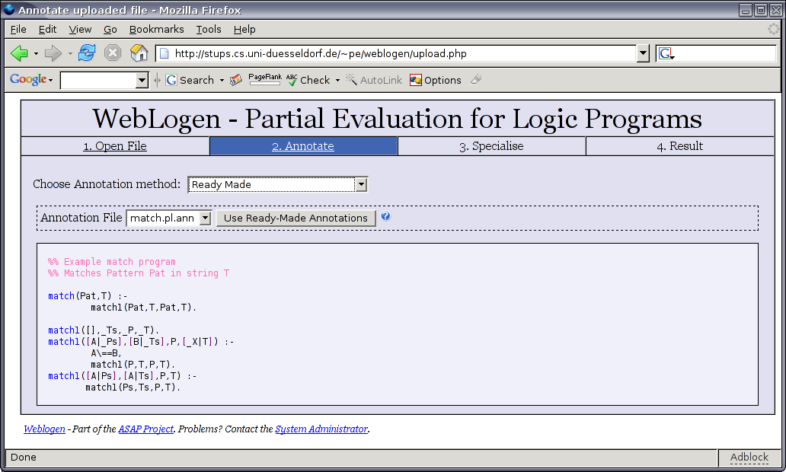
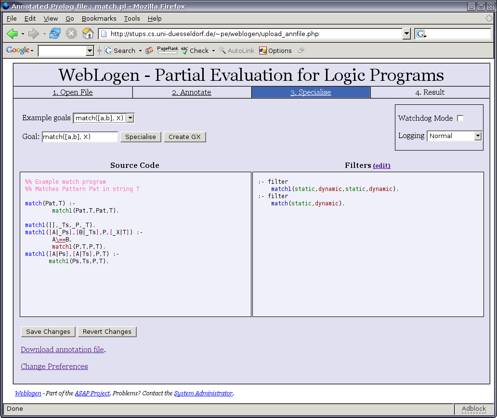
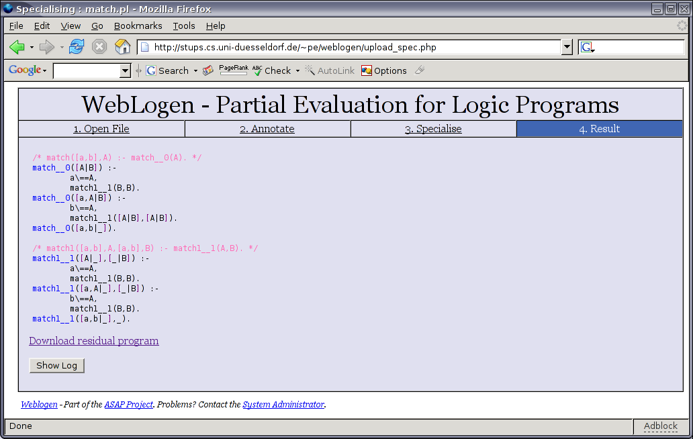
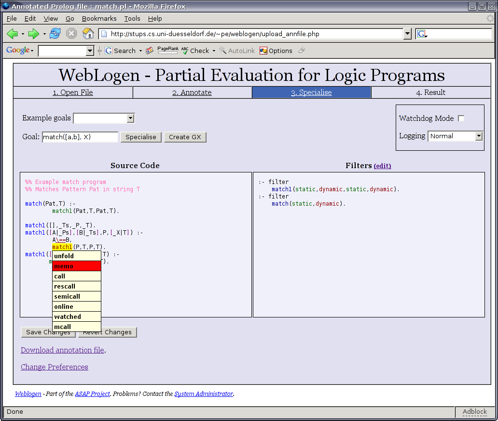
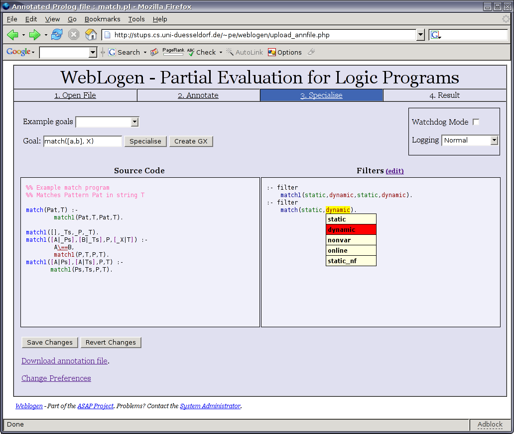
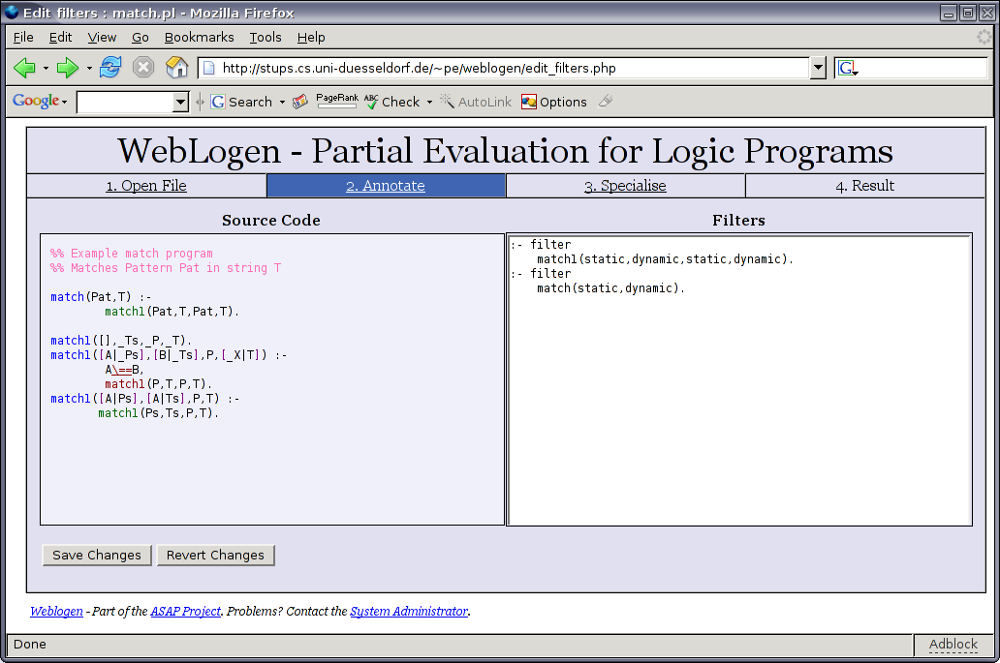

WebLogen is a web interface to the logen partial evaluation system. This allows you specialise your Prolog programs without ever installing logen itself; it requires only a reasonably up-to-date browser such as Mozilla Firefox, Safari or Internet Explorer. If you experience any problems, please check the Browser Compatibility section. Javascript is required to use certain features, although basic use is probably still possible without it.
Partial evaluation is a process, which given only partial input for a program, transforms it into a new program which is hopefully smaller, faster or both. Prolog is a logic-based declarative language built upon the idea that users should specify what problem they want to solve rather than how to do it as in imperative languages.
There are three main ways to provide source code to WebLogen:

You can enter text directly by typing into the large text box on the “Open File” page. When you have finished, then press the Next button. Weblogen will attempt to parse your program and if this fails, you will be shown the error message along with the probable location of the error.
If you already have a program you wish to specialise, type the local name of the file into the Local File box or click Browse to use the file opener built into your browser. This button may be labelled differently in some browsers. Clicking Upload will take you straight to the annotation page, while clicking Upload and Edit allows you to modify the file first.
Alternatively if you want to test WebLogen but have no programs of your own, you can select one of our pre-prepared examples by selecting one from the Example menu and clicking Open. You can also edit the examples first by clicking Open and Edit.
Programs can be initially annotated in four different ways:
You can provide your own annotations. These will generally be in a file with a .pl.ann extension and can either be written manually or can obtained at later stages in the WebLogen process. Once you have selected a file, click Upload File.

If you have no annotations of your own, the simplest way to start is to use the simple BTA. This gives you the option of either annotating unfold or call on each predicate or using memo or rescall.
The first option is the most aggressive and in many cases will cause logen not to terminate. It can however be useful starting point which can be refined in the next stage. The other option is the most conservative and if you specialise a program directly with this option, you will end up with a program identical to your initial one. Again the result can be refined later. When you have chosen the annotation mode, click Apply BTA.
The automatic BTA is a way of annotating programs both aggressively so that you can achieve real performance increases, but which is also safe and will ensure that the specialisation terminates.
In most cases you just enter a filter such as match(static, dynamic), which states that the entry point to the program is match and that its first argument is static while its second is dynamic. For match, this means that the pattern is fixed, but that the search string will be supplied when the final program is run. Once you have supplied the appropriate data, click Apply BTA.
You can also specify that the BTA should only propagate filters and not change annotations (they will then all default to unfold/call).
If the BTA does not give you annotations you want, you could try using a different norm. A different norm can sometimes show a program is safe to annotate with more aggressive annotations.

For the example programs there will be an option to use a ready-made annotation file (if provided). Having chosen one, click Use Ready-Made Annotations.

In the third stage, you should be able to see your annotated program. This will be made up of a highlighted version of your source program and a list of filters. Each annotation is indicated by a different colour and text decoration. You can find out what each one means my moving the mouse over it, which causes a description to appear below the program.
To specialise the program you must specify a goal. This looks like a call to a predicate, where you specify fixed data now for static arguments and free variables for dynamic arguments (including return values). For instance, match([a,b], X) specifies that the pattern argument for match should be a list [a,b] and that the list to be searched is unknown. If you chose to use an example program provided by WebLogen, there may be a Stock goals menu which gives some appropriate goals. Their appropriateness is of course dependent on the annotations chosen.

In addition, you can choose to specialise in watchdog mode, which can detect when the specialisation is looping infinitely and halt it. This determination relies on heuristics since the problem is undecidable, but it can be useful nonethelss. Changing the logging information makes logen output more verbosely to the log it generates as it specialises. In general extra logging information will only be useful to the logen developers.
When you are ready, click Specialise. Shortly, a residual program should appear on your screen. At the bottom of the page is a link to download the program so you can save it.
Clicking Show Log will show the logging output of logen. This can be useful if something unexpected happens. The log can be hidden by pressing the button again. If specialisation failed (e.g. because you annotated a non-whitelisted predicate as call or because the process timed out), the log will be displayed instead of the program. To try a different goal, or refine the program annotations just press your browser's back button.

Once you have chosen your initial annotations, you can refine them to try and get a different result. To do this move the mouse over the predicate which you wish to change. Click with the left mouse button and a menu should appear with a list of annotations (the current one will be highlighted). Click on the desired annotation and the colour should change. You can do this as many times as you like, but when you are finished you must click Upload new annotations in order that your changes be saved.

The simplest way to edit the filters is to click on the parameter types (e.g. static or dynamic). Just select the type you want or move the mouse away if you want to leave it unchanged.

To memo a predicate, you must ensure that a filter exists for it. Clicking on the name of a predicate (coloured blue) in the source pane will automatically add a filter with that name and arity to the filter pane. This filter will have all the parameter types set to dynamic and will likely need adjustment. If you forget to create the filter first when you select memo, you will be asked whether you want to create one. You can delete a filter by clicking on the filter keyword in the definition for it.
A more powerful way to edit filters is to enter the filter text manually. This allows the use of complex filter types such type list(dynamic). To enter this mode click the “edit” above the filters pane. Once you have edited the filters, click “Save Changes”.

We intend to support all browsers listed below. Since we have limited resources we have only tested on the following browsers and so it is possible and even likely that other browsers will work as well.
Some versions of Safari 2.0 have a bug which causes the menus to disappear the moment the mouse is moved. This bug is difficult to solve in Weblogen, but hopefully will be fixed in the next update to Safari. See the bug report for details.
To use all of the features of Weblogen, you need Javascript. If Javascript is not available you will not be able to modify the annotations using the web interface, but will have to edit the annotation file manually before uploading it. In addition you may find it difficult to change the annotation method in stage 2.